| Income group (AMI) | Description |
|---|---|
| Above 120% AMI | High-income |
| 100-120% AMI | Above-average income |
| 80-100% AMI | Moderate-income |
| 50-80% AMI | Low-income |
| 30-50% AMI | Very low-income |
| Below 30% AMI | Extremely low-income |
| Zero or negative income | No income |
3 Regional spectrum
This report outlines the housing spectrum concept and its utility for understanding housing market dynamics. It includes assessments of households in the region by various demographic and socioeconomic characteristics, primarily by wages/income. Special analysis for the region’s core workforce (i.e. persons both living and working within the region) can be found in Chapter 4.
How AMIs and the “region” are defined
The Area Median Income (AMI) categories in the regional housing spectrum are custom limits developed from the same methods used by the U.S. Department of Housing and Urban Development (HUD). Because HUD does not publish official limits for just the Fredercksburg region, new AMIs were calculated using the latest available microdata from the American Community Survey (ACS).
ACS microdata are available at the same geography served by the George Washington Regional Commission (GWRC), known officially as Planning District 16. The five localities in this area include:
- City of Fredericksburg
- Caroline County
- King George County
- Spotsylvania County
- Stafford County
Together, these jurisdictions are collectively referred to as “the region” throughout the report.
See Chapter 2 for a detailed explainer on HUD AMIs and the specific methods used to generate custom income limits for the region.
3.1 Overview
With few exceptions, housing opportunities are primarily limited by how much money a household has available to buy or rent a home. To create a regional housing spectrum, we first need to group households according to their incomes. The categories used here, along with their respective plain-language descriptions, are shown below.
Income
Based on 2018-2022 ACS 5-year estimates, there are approximately 385,000 persons living in 132,300 households across the region.1 Over a third (36.1%) of these are high-income households. The next most common group are low-income households (18.4%). All other households with positive incomes are roughly divided even (at 10-13% each) among other income groups.
1 Persons living in group quarters, such as college dorms and nursing homes, are excluded from this analysis.
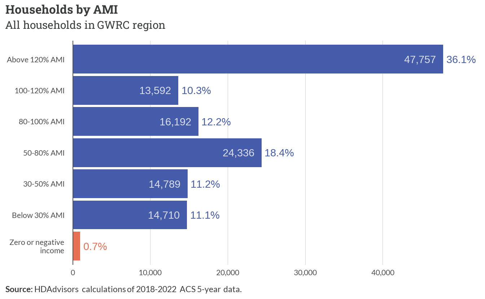
Households with no income excluded
Fewer than 1,000 households (<1%) did not have a net positive income for the 12 months prior to their survey response. While the housing needs of this small group represent an outsized component of the region’s housing challenges, the small sample of responses prevents reliable estimates from being calculated. As a result, these records are mostly excluded from the remainder of the report.
We can provide a clearer picture of actual household incomes within these AMI groups by plotting their distributions, as shown in the figure below. The overlapping curves demonstrate that while incomes generally increase with higher AMI percentages, there’s significant variation within each group due to the variety of household sizes represented.
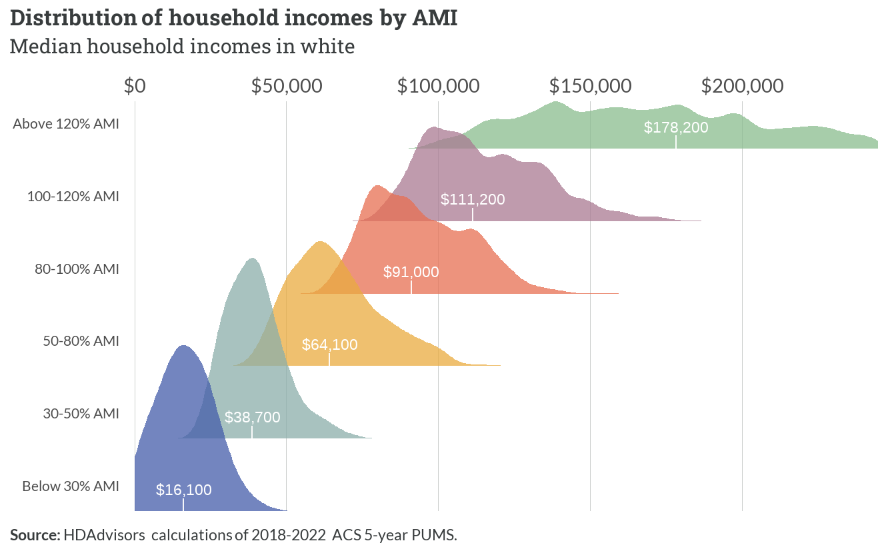
This table adds the typical range for each AMI group to its descriptions.2 For example, we now know to associate low-income households with incomes between roughly $50,000 and $90,000.
2 Here, typical range includes all values between the 10th and 90th percentiles. This removes outliers and reflects the middle 80% of households within each group.
| Income group (AMI) | Description | Typical range |
|---|---|---|
| Above 120% AMI | High-income | $124,300 - $292,700 |
| 100-120% AMI | Above-average income | $93,000 - $140,000 |
| 80-100% AMI | Moderate-income | $75,000 - $116,000 |
| 50-80% AMI | Low-income | $49,000 - $88,000 |
| 30-50% AMI | Very low-income | $28,600 - $51,500 |
| Below 30% AMI | Extremely low-income | $3,500 - $28,000 |
Tenure
For every 100 households in the region, 76 own their homes. Of these 76 homeowners, 58 are still making mortgage payments, while 18 have fully paid off their homes. The other 24 out of every 100 households are renters.
While homeownership becomes less common as we move down the income scale, homeowners still outnumber renters in every income group except for extremely low-income households. Of note are the slightly higher shares of homeowners below 50% AMI without mortgages—likely a reflection of seniors on fixed incomes who live in the same homes they purchased over 30 years ago.
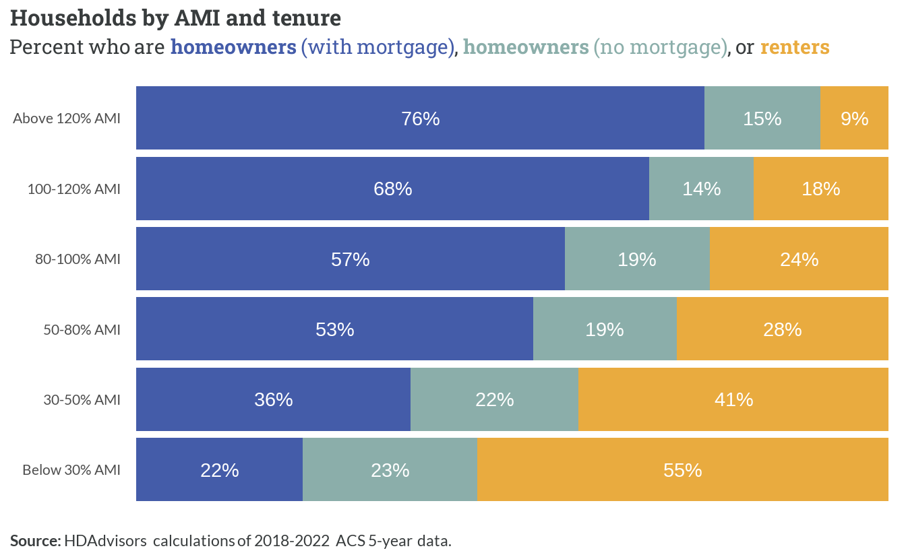
Household characteristics
The most common type of household in the region are those headed by a married (or unmarried) couple. Single persons living alone are the next most common, and make up larger shares of households with incomes below 50% AMI. Single parents with at least one child are also more prevalent among lower-income households.
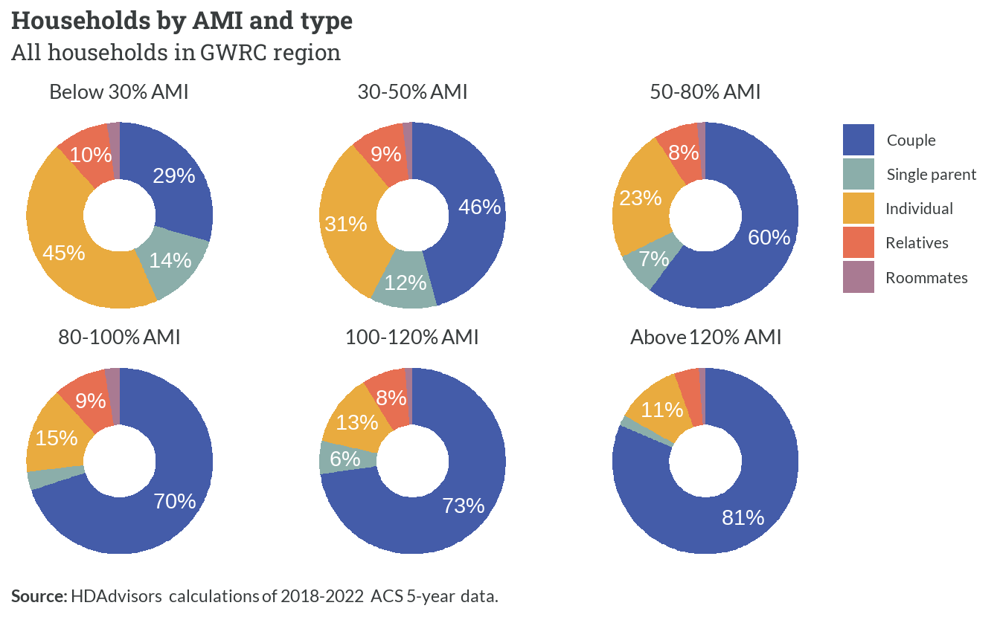
Middle-aged households—where the average age of primary adults under one roof is between 35 and 64—are the most prevalent age group across every income level. Since these are the prime income-earning years for most adults, middle-aged households are a larger share of higher income households. Conversely, young households and senior/elderly households are more likely to have below-average incomes.
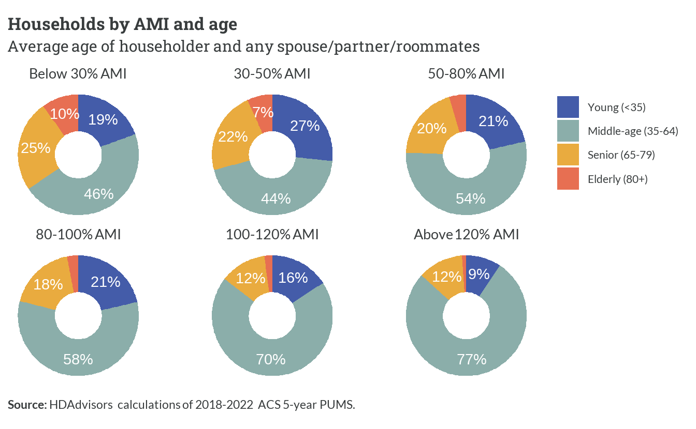
Only a third of all households have at least one school-aged child under 18. While this share is fairly consistent across all income levels, households earning between 50% AMI and 120% AMI are slightly more likely to have children than households with the lowest and highest incomes.
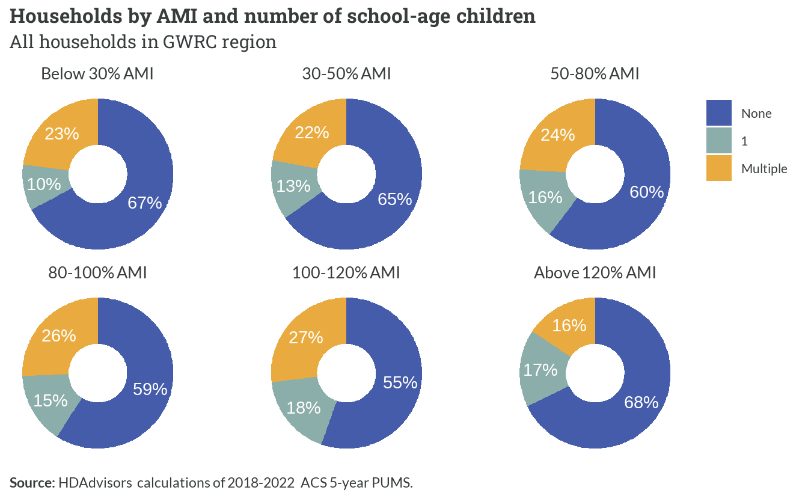
Employment
The majority of adults in the region who are between 25 to 54, and who do not have a disability, are currently employed or looking for work. While another small share are active duty members of the military, any of those adults not actively working or seeking jobs are outside of the labor force. With very little or no income of their own, non-working individuals are much more likely to be part of households below 50% AMI.
Who could work, but isn’t?
Among persons in extremely and very low-income households who are not in the labor force and do not have a disability, many are probably stay-at-home moms. These individuals are mostly women (83%) who live with at least one earner (80%), and live with at least one child (80%).
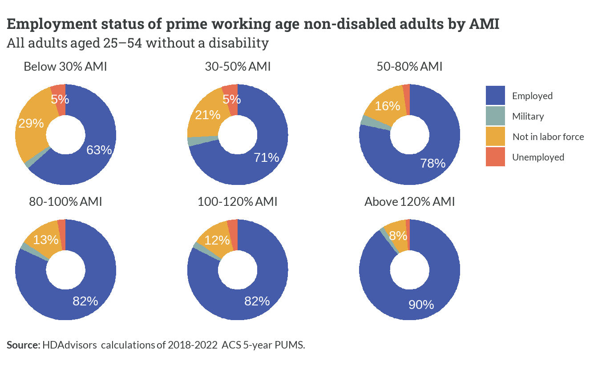
Only 18% of all households in the region do not include someone earning income.3 The majority of those are senior or elderly households (76%) with lower incomes. Households with incomes between 30% AMI and 80% AMI are more likely than average to have just a single earner, while double-earner households are increasingly prevalent as incomes go up.
3 A person is an earner if their total pay from wages and/or self-employment income over the last 12 months is at least $5,000.
Higher-income groups also have a noticeable share of households with three or more earners. Many of these multiple-earner households (68%) are families with at least one younger, working adult child still living with parents who have not retired.
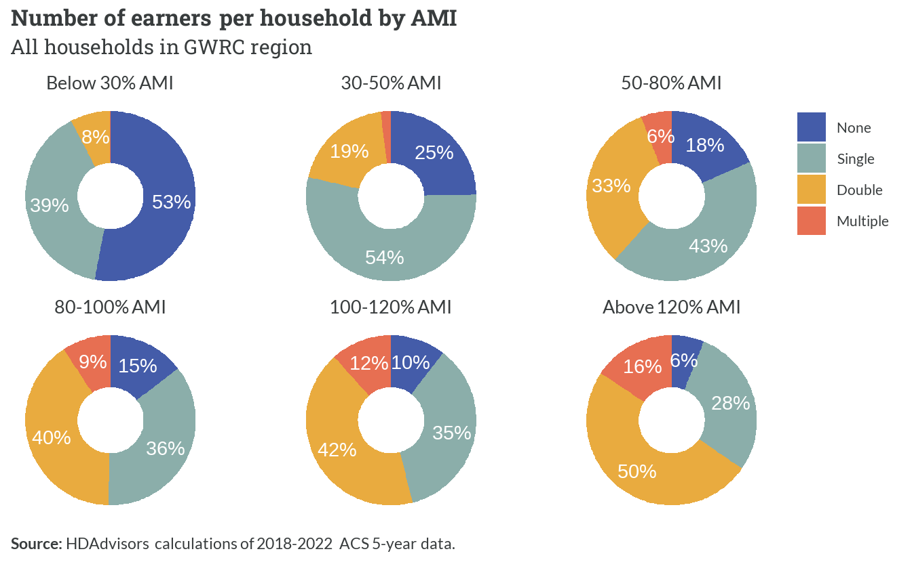
3.2 Below 30% AMI
| Below 30% AMI | Summary |
|---|---|
| Households | 14,710 |
| Persons | 34,864 |
| Average household size | 2.39 |
| Median household income | $16,100 |
Like other income groups, most extremely low-income households live in detached single-family homes or townhomes. Among renters, single-family homes are the most common type but are not the majority. A large portion of renters live in smaller apartment buildings, with slightly smaller shares in medium and large-sized buildings.
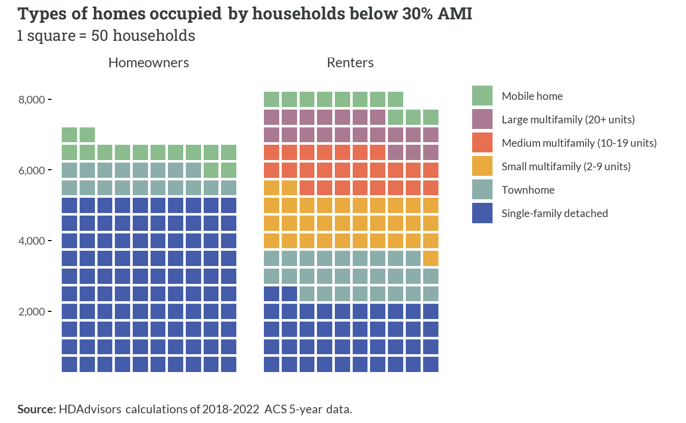
The majority of total aggregate income earned by extremely-low income households comes from wages earned from work. This share is larger (70%) for younger renter households who are more likely to be of working age. Among homeowners, nearly equal amounts come from both wages and Social Security, which reflect their higher average ages. Only a small fraction (about 5%) of income for these households comes from public assistance programs.4
4 This total combines the separate two ACS estimates for Supplemental Security Income (SSI) and for Public assistance programs. The latter includes Temporary Assistance to Needy Families (TANF) and other forms of cash benefits. Noncash benefits, such as Food Stamps, are excluded.
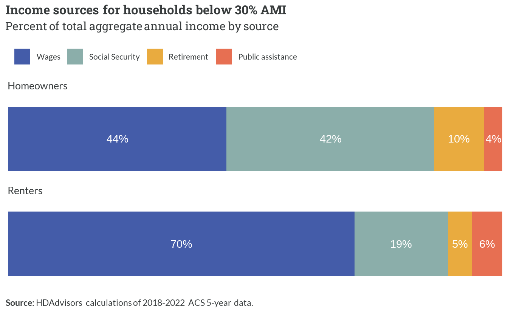
The amounts households below 30% AMI spend on housing each month highly depends on whether they own or rent. Average homeowner costs are less than $800—with many paying less than $500 monthly—likely due to many seniors who have paid off their mortgages, and now must only pay property taxes and insurance. The average renter, on the other hand, pays more than $1,100 for their apartment.
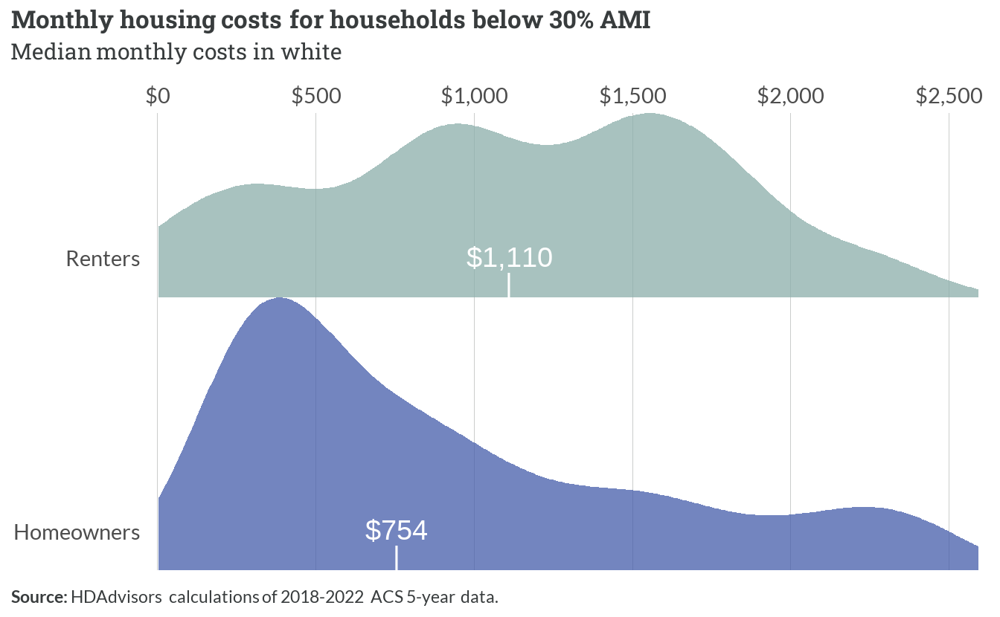
More than 2 in 3 extremely low-income households spend more than 30% of their gross income on basic housing costs. Worse, most of these households are severely cost-burdened—dedicating more than 50% of their income toward housing.
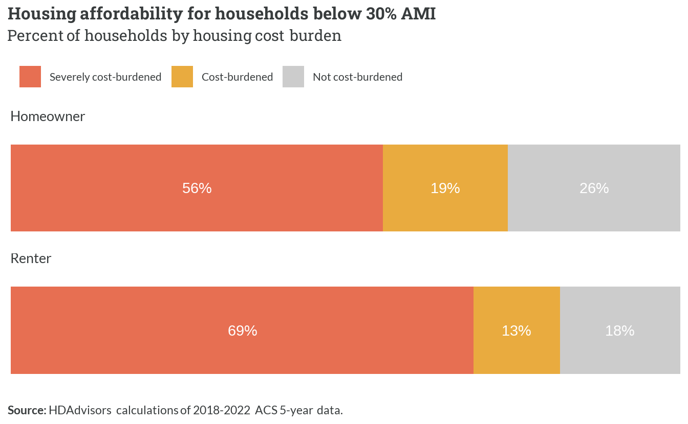
3.3 30-50% AMI
| 30-50% AMI | Summary |
|---|---|
| Households | 14,789 |
| Persons | 38,156 |
| Average household size | 2.51 |
| Median household income | $38,700 |
Very low income households in the region make a median household income of $38,700 across almost 14,790 households.
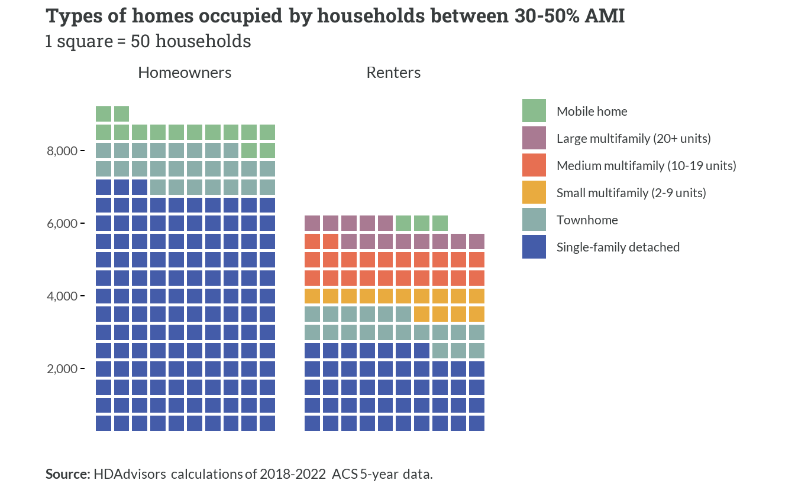
Very low income (VLI) homeowners, like ELI households, are also categorized by single family detached and townhomes. However, there are more households in this spectrum bracket that own than rent compared with ELI households. A little over half of VLI renting households live in single family and townhome units, with a much smaller share of these households in multifamily units.
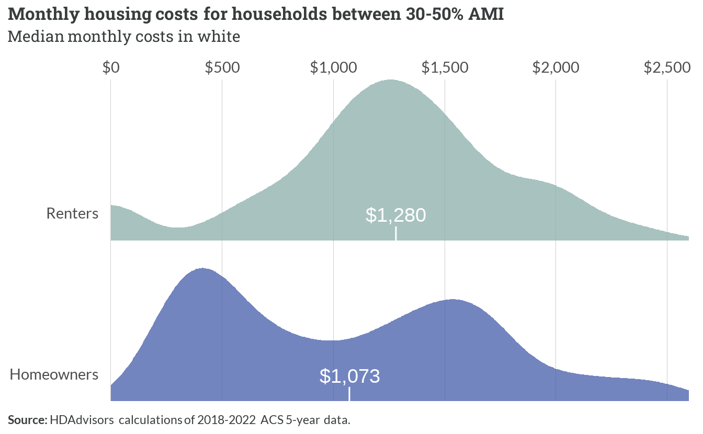
Even with a smaller proportion of households renting, VLI households are only paying a $200 difference between the median mortgage and median rent. Large shares of VLI homeowners pay less than $500 a month in housing costs, while the second greatest share of homeowners pay a little over $1500 a month. Renters, while likely cost burdened, pay a median $1280 towards their housing.
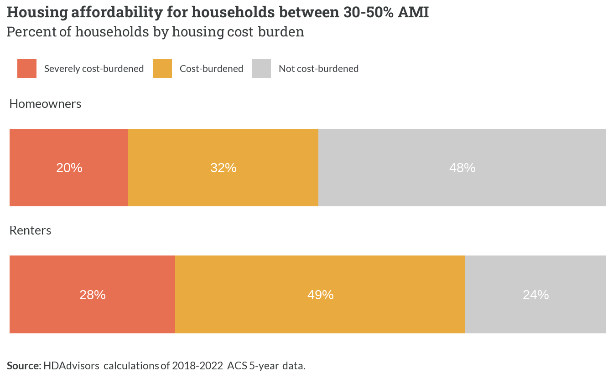
Almost 50% of VLI renters are cost burdened, or spending more than 30% in their income towards housing costs. With the 28% of VLI renting households that are extremely cost burdened, over three quarters of VLI renters are cost burdened households - leaving a smaller share of income available for life’s other expenses. Nearly the same amount of VLI homeowners are not cost burdened at all, demonstrating the benefits of affordable homeownership options when they are available.
3.4 50-80% AMI
| 50-80% AMI | Summary |
|---|---|
| Households | 24,336 |
| Persons | 68,694 |
| Average household size | 2.83 |
| Median household income | $64,100 |
With median household incomes of $64,100, regional low income households represent nearly 68,700 people in the area. These 24,336 households have slightly bigger average sizes than ELI and VLI households.
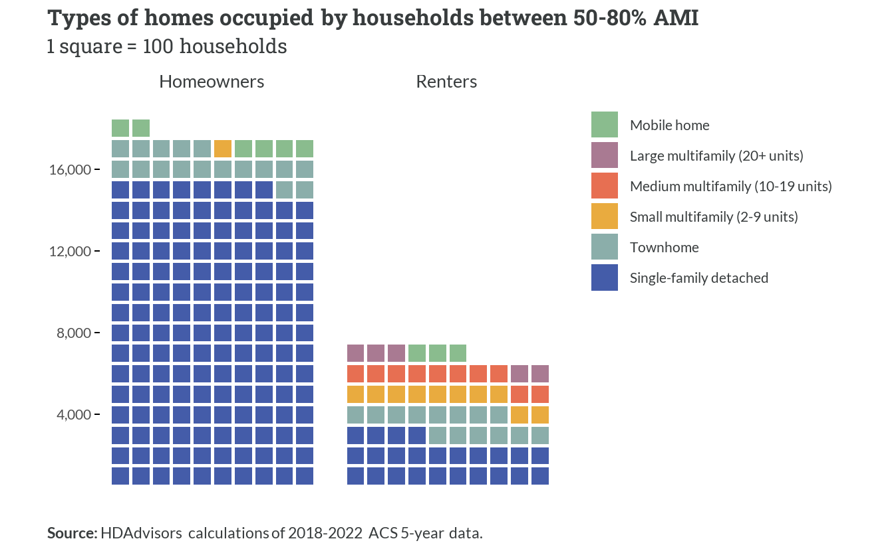
These low income households are overwhelmingly small family owners, with less than half of low income households renting.
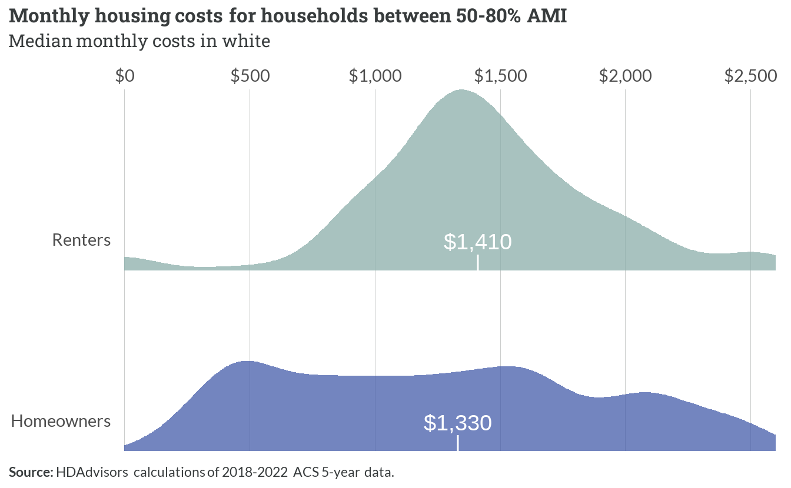
Low income renters in this bracket of the spectrum are generally not cost-burdened with many renters paying a median rent of $1410. Low income homeowners on the other hand see much greater and more even distribution of household housing costs across the board, with a median payment at $1330.
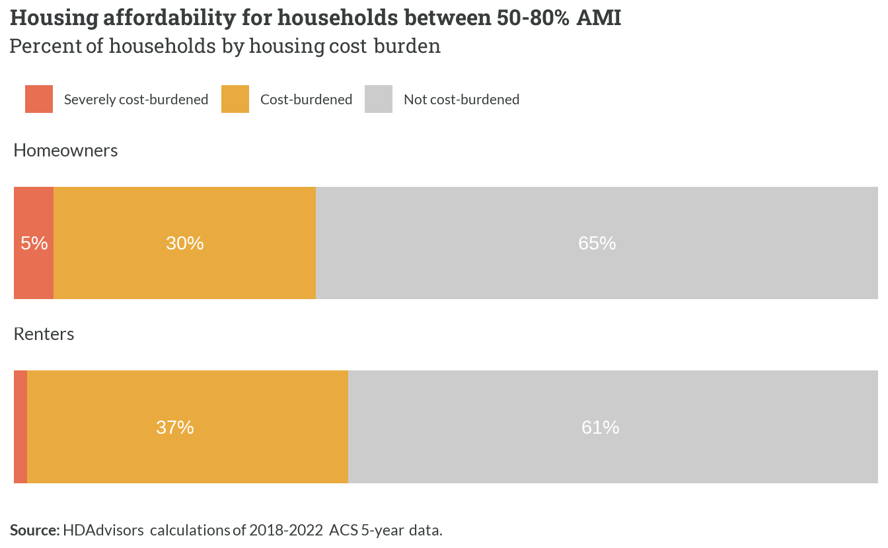
Additionally, low income homeowners and renters are not likely cost burdened with the majority in each tenure able to pay less than 30% of income towards housing costs. However, 30% and 5% of low income homeowners are cost-burdened and severely cost burdened respectively, with 37% and 1% of renters that are also cost burdened and severely cost burdened.
3.5 80-100% AMI
| 80-100% AMI | Summary |
|---|---|
| Households | 16,192 |
| Persons | 49,933 |
| Average household size | 3.01 |
| Median household income | $91,000 |
Moderate income households in the region make a median household income at $91,000, representing almost 50,000 people with a little more than 3 people per household. At greater incomes, we are starting to see households grow in size.
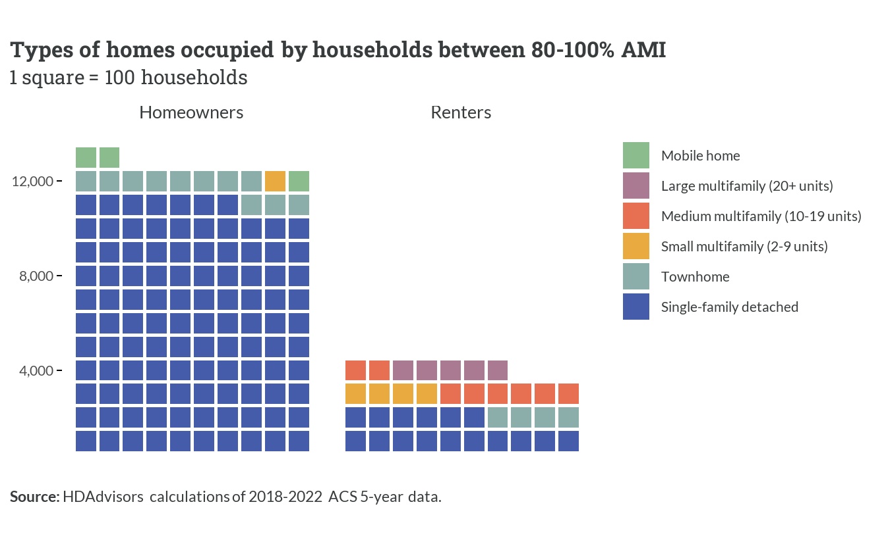
This translates to household types, as well, with the vast majority of ownership units (about 11,500) out of the 16,192 moderate income households in single family detached homes. Only about 3,700 moderate income households rent.
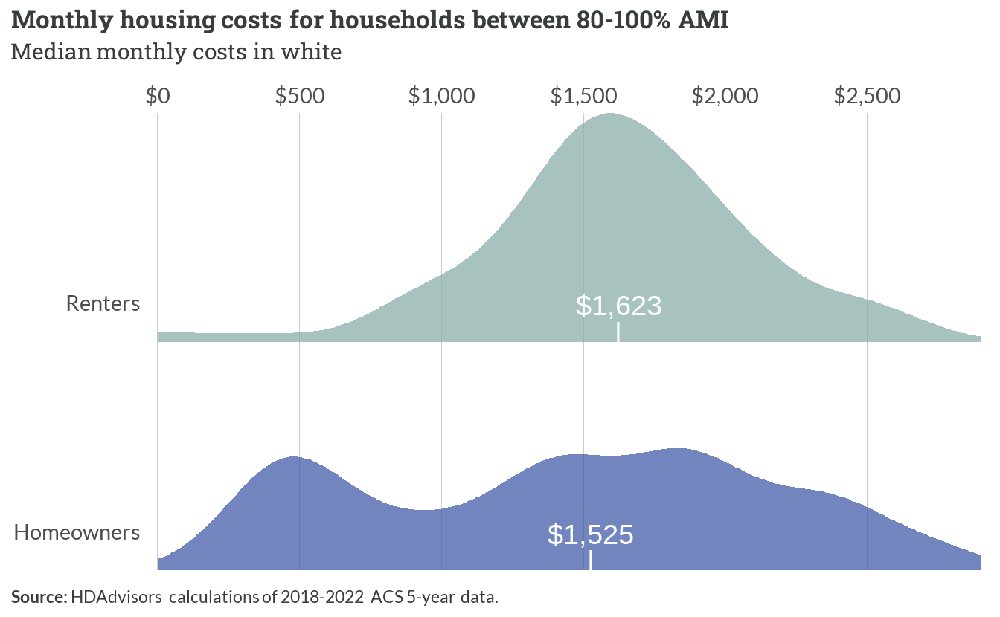
With greater diversity in the type of payment, the moderate income homeowners pay a median $1,525 towards housing costs, while the majority of the renting households pay a median $1,623.
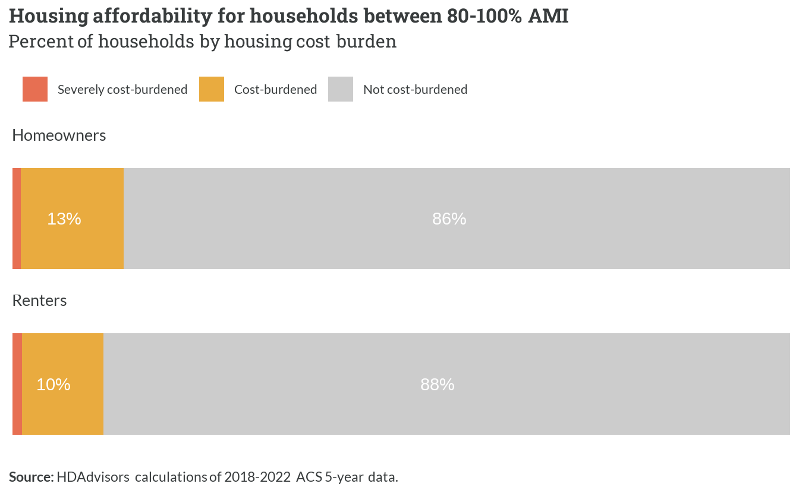
Similarly to low income households, regional moderate income households are less likely to be housing cost burdened. Eighty eight (88%) of renting households and 86% of owners are not disproportionately paying towards their housing costs.
3.6 100-120% AMI
| 100-120% AMI | Summary |
|---|---|
| Households | 13,592 |
| Persons | 43,058 |
| Average household size | 3.05 |
| Median household income | $111,200 |
Households with above average income continue the trend of increased income, increasing household size, with a median household income of $111,200.
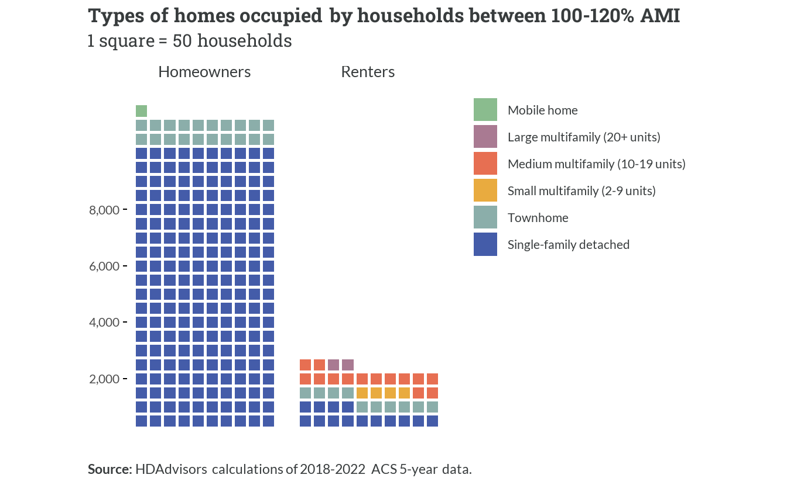
As with all other income brackets in the spectrum, single family homeownership is by far the most common housing type of these households.
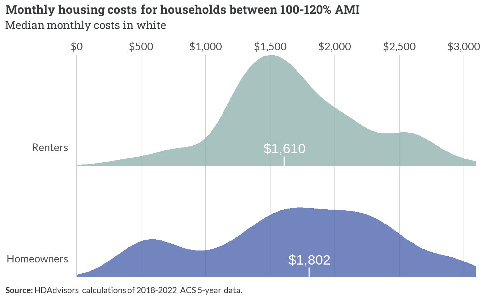
For the nearly 2,200 above-average income renting households, median housing costs are around $1,610. For homeowners, those costs are a little above $1,802 per month.
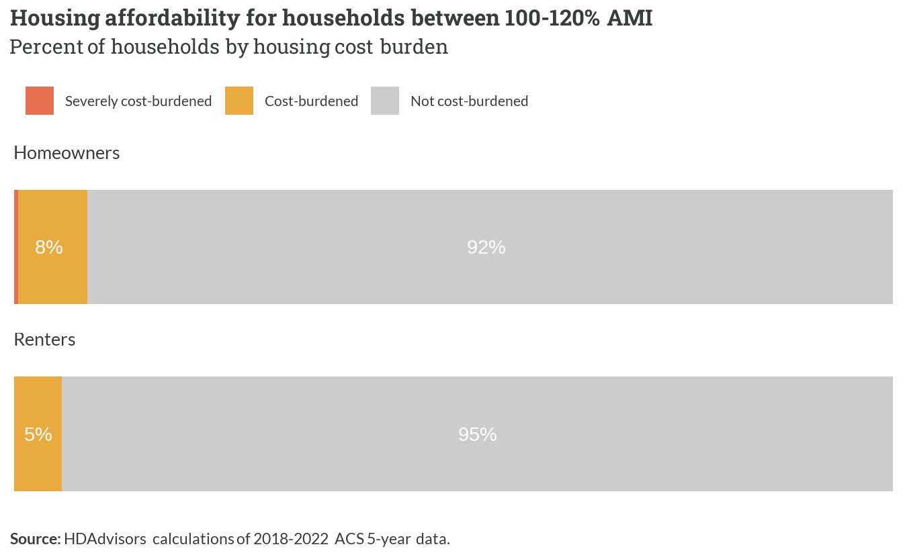
Only a very small share of above-average income households (both homeowners and renters) face cost burden.
3.7 Above 120% AMI
| Above 120% AMI | Summary |
|---|---|
| Households | 47,757 |
| Persons | 141,479 |
| Average household size | 2.84 |
| Median household income | $178,200 |
High-income households represent the greatest share of households on the regional housing spectrum. There are 47,757 high income households representing 141,479 people with median incomes at $178,200.
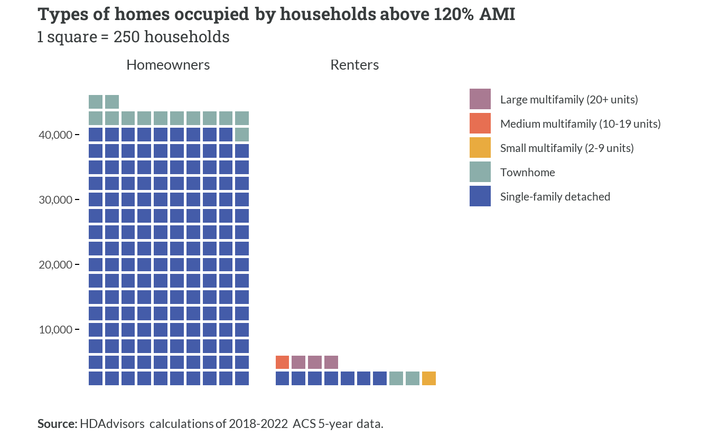
As can be expected, trending with increasing income, almost all households in this category own their homes. These are mostly single-family detached homes, with only a few thousand (out of more than 40,000) living in townhomes.
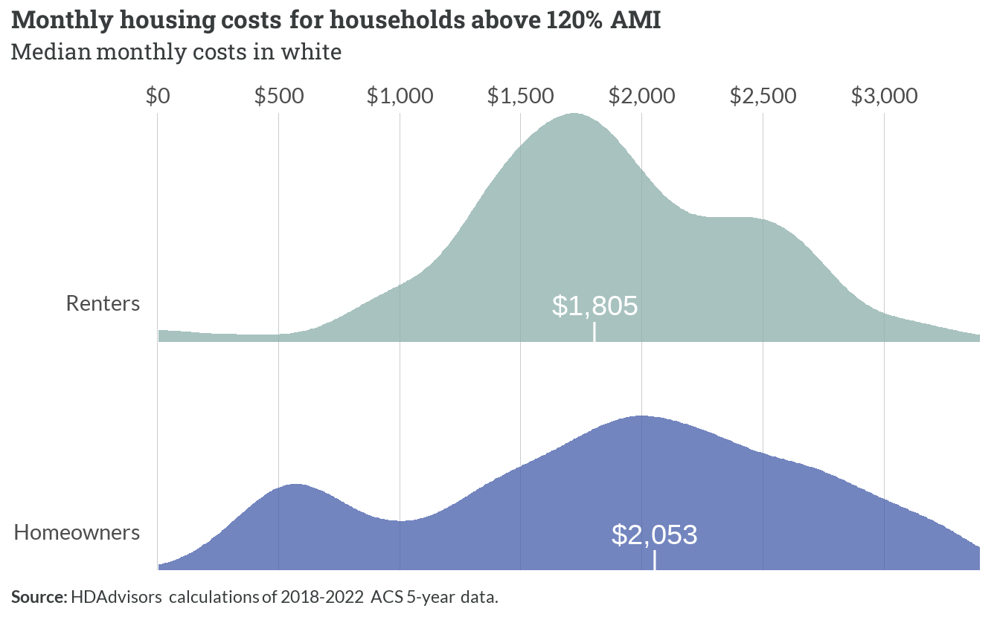
These homeowner households are paying greater amounts for their housing costs, at a median $2,053. Renter high-income households are paying a median $1,805 in costs, with a large share paying $2,000 in rent or more.
Cost burden rates among high-income households are negligible, and therefore not shown in a separate figure.